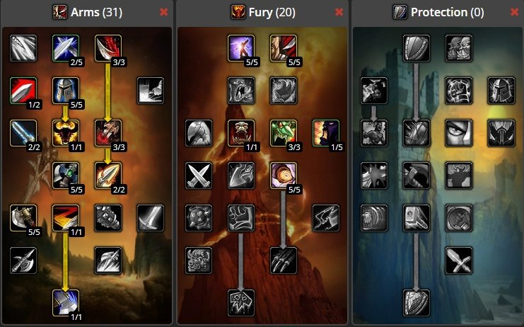

With that said, leveling will take you a while !
So get comfortable with you character, because you are going to be stuck with it for a while.
As for leveling spec, i recommend going Arms. Stuff like: Tactical Mastery, Anger Managment and Sweeping Strikes are going to make leveling so much easier.
